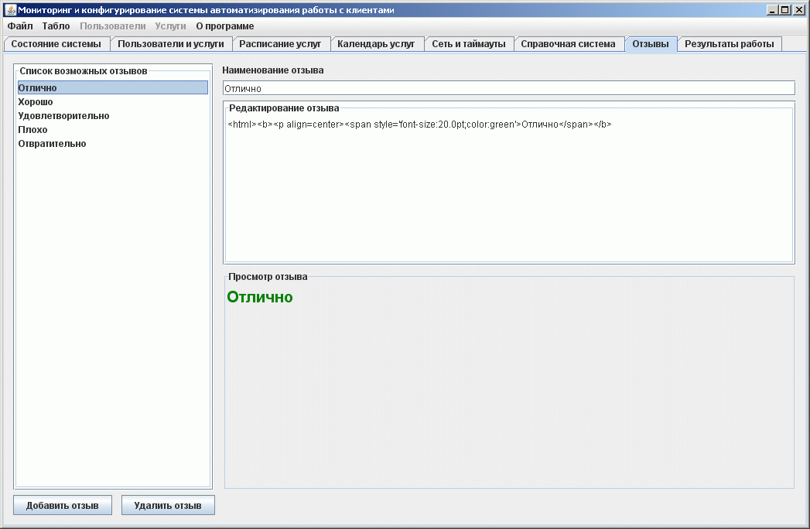

Ведения справочника клиентских отзывов по работе организации
На этой закладке формируется справочник клиентских отзывов по работе организации, которые можно оставить клиентам с пункта регистрации

В левой части расположен список возможных отзывов. Можно добавлять новые или удалять старые отзывы. Размер справочника не ограничен.
Справа расположены элементы редактировани содержимого отзывов. Можно изменить наименование отзыва. Текст отображения отзыва на пункте регистрации имеет HTML форматирование, по этому можно подготовить информацию в любом удобном для восприятия пользователем виде. В части "Просмотр отзыва" можно сразу видеть как информация будет отображена на пункте регистрации.
Кнопку "Отзывы" можно отключить на пункте регистрации и не формировать список отзыывов за ненадобностью.